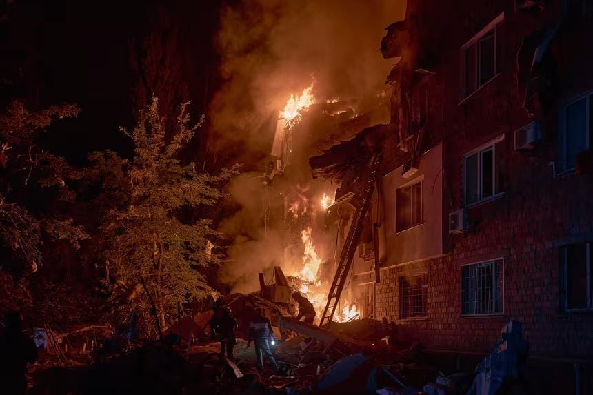

世界苦茶08月29日新闻 | 42条 | 金正恩将首次参加多边外交活动

金正恩将首次参加多边外交活动 | 俄罗斯空袭基辅造成18死 | 特朗普俄乌问题特使误传普京方案 | 印尼爆发大规模抗议
SUBSTACK新文章
每日三條新聞解析
苦茶数据
美元兑人民币：7.12（昨日7.14，前日7.15）
美元兑日元：146.94（昨日147.14，前日147.73）
上证指数：3857（昨日792，前日3862）
标普500指数：6501（昨日6481，前日6465）
比特币：109684（昨日112765，前日111399）
布伦特原油：68.18（昨日67.43，前日67.25）
中国新闻
• 桂林漂流点两人溺亡 ：中国广西桂林一处漂流点发生溺亡事件。通报称，事发时多人在漂流点附近水域游玩，其中两人不慎落水身亡。据观察者网报道，一名网民在社交平台发布视频称，他的弟弟于8月23日在位于广西桂林龙胜县的龙脊峡漂流点营救一名落水女子时，不幸双双溺亡。网民还称，弟弟不会游泳，事发时景区还未到营业时间。
• 香港举行大型反恐演习 ：香港跨部门反恐专责组举行自“三层防范机制”成立后的首个大型跨部门反恐演习。这也是历来演习中，参与公众团体数目最多的一次。综合星岛头条网和《大公报》报道，香港跨部门反恐专责组星期四下午在启德邮轮码头举行代号“勇光”的大规模演习，参与单位包括多个政府部门、纪律部队和机构。此次演习模拟恐怖分子袭击作为香港重要基础设施之一的启德邮轮码头，场景涉及炸弹威胁。演练可测试各单位在发生紧急事故时的即时应变能力和沟通合作能力，也能让前线人员累积实战经验，加强市民对政府应对恐袭的信心。
• 中国将办抗战纪念晚会 ：中国文旅部称，纪念抗战胜利80周年文艺晚会将突出表现“中国共产党在全民族抗战中的中流砥柱作用”。据中新社报道，中国人民抗日战争暨世界反法西斯战争胜利80周年纪念活动第一场记者招待会星期四在北京举行。中国文化和旅游部副部长卢映川介绍，文艺晚会定于9月3日晚在人民大会堂举办。
• 中方批日本洗白侵略史 ：日本据报在过去10年投入560亿日元宣传“正确形象”，中国国防部对此回应说，掩盖史实和推卸责任无法“洗白”自己，只会引起全世界爱好和平人民的高度警惕和严厉谴责。据中新社报道，国防部新闻发言人张晓刚星期四在例行记者会上作出上述回应。有媒体提问称，中国央视旗下新媒体“玉渊谭天”调查发现，自中国2015年首次举行抗战胜利日阅兵以来，日本用于宣传所谓“正确形象”的预算超过560亿日元。对此张晓刚强调，掩盖史实和推卸责任无法“洗白”自己。日本应该以诚实态度正视和反省侵略历史，同军国主义彻底切割，切实尊重中国等受害国人民的感情，这样才能真正取信于亚洲邻国和国际社会。
• 中国空军歼-20将展出 ：下个月举行的中国空军航空开放活动，将首次静态展示歼-20战机。据“国防部发布”微信公众号，中国国防部新闻发言人张晓刚大校星期四在记者会上介绍空军航空开放活动特点时说，这项活动将集中展出百余型空军现役飞机、地面装备以及退役经典装备，首次静态展示歼-20，首次安排轰炸机编队通场，“八一”“红鹰”“天之翼”表演队将献上精彩表演。这项活动也将增强装备开放体验，设置模拟飞行、无人机操控、跳伞等沉浸式体验区，同步组织军营开放活动，让公众更直观深入了解中国空军。
• 京东四连冠民企500强 ：中华全国工商业联合会发布最新中国民营企业500强榜单，电商巨头京东连续四年居首。综合中新社和新华社报道，全国工商联星期四发布2025中国民营企业500强榜单和《2025中国民营企业500强调研分析报告》，京东集团以1万1500亿元营收规模连续四年位列榜首。阿里巴巴和恒力集团分别排在第二和第三。全国工商联官网发布的2025中国民营企业500强榜单资料显示，两家公司的营收总额分别为9817亿和8715亿元。华为投资控股和比亚迪则分别以8620亿和7771亿元排在第四和第五位。
• 北京香山论坛9月举行 ：中国北京香山论坛将从9月17日至19日举行。中国国防部新闻发言人张晓刚大校星期四在记者会上说，第十二届北京香山论坛将举行四场全体会议、八场平行分组会议。张晓刚也说，本届论坛将举办高端对话、中外名家对话、中外青年军官学者研讨会，以及“中国军队参加联合国维和行动回顾与展望”“中国海军执行国际人道主义医疗服务任务情况”介绍会等特色活动。
• 李成钢将赴美会谈官员 ：中国商务部副部长李成钢将率团前往美国首都华盛顿，与美国官员会面。中国商务部星期四在新闻发布会上说，也是商务部国际贸易谈判代表的李成钢，率团于8月24日至27日访问加拿大，与加拿大共同主持召开中加经贸联委会，之后李成钢一行将赴华盛顿会见美方相关官员。中国商务部发言人说，中国愿与美国一道，继续发挥好中美经贸磋商机制作用，通过平等对话协商解决问题，共同维护中美经贸关系健康稳定可持续发展。
• 中方欢迎金正恩访华 ：中国官方强调，热烈欢迎朝鲜领导人金正恩赴华出席抗战胜利80周年纪念活动，并说中国愿同朝鲜在促进地区和平稳定、维护国际公平正义的事业中密切协作。中国外交部部长助理洪磊星期四在抗战胜利80周年纪念活动新闻中心记者招待会上说，中朝是山水相连的传统友好邻邦，“我们热烈欢迎金正恩总书记来华出席纪念活动”。洪磊提到，今年是中国人民抗日战争暨世界反法西斯战争胜利80周年，也是朝鲜祖国解放80周年，并说：“在艰苦卓绝的战争年代，中朝两国人民相互支持，共同抗击日本侵略，为世界反法西斯战争和人类正义事业胜利作出了重要贡献。”
亚太印太新闻
• 萧旭岑称马英九不参选 ：国民党主席改选陷入僵局，马英九基金会执行长萧旭岑说，马英九不会参选。据中时新闻网报道，萧旭岑星期四说，确实有人劝进马英九，但马英九绝对不可能参选，“若让马回来，那不就还是老人吗？”萧旭岑说，马英九认为，党内应该由下一个梯队来带领国民党重返执政。
• 印尼工人再度集会抗议 ：数以百计的印度尼西亚工人星期四在雅加达国会大厦附近集会，以寻求提高工资和降低税收，这也是印尼民众本周举行的第二次大型集会。彭博社报道，印尼警方星期四在首都部署了超过4500名人员，在国会大厦周围摆设路障并改道交通。随着民众举着抗议标语陆续抵达现场并高喊诉求，国会大厦内部相对安静，议员们收到指示居家办公。印尼工党主席赛义德说，许多工人中午前便离开集会，因为他们下午必须回去上班。工党原本预计首都和其他38个主要城市将有多达1万名工人参加机会，但现身的工人比预期中少。 （翻評：這麼大事兒普拉博沃還來麼？）
• 丰明市拟限手机两小时 ：日本爱知县丰明市拟推动立法，促所有市民除了工作或上学外，将每天使用智能手机的时间限制在两小时内。丰明市政府星期一将限制使用手机的草案提交给市议会。草案指出，长时间使用智能手机、平板电脑和游戏机，会导致睡眠不足等健康问题，还会缩短家庭对话时间，对家庭环境造成负面影响，阻碍儿童健康成长。草案呼吁所有市民及18岁以下学生，除工作和上学外，将智能手机的使用时间限制在每天两小时内。草案也建议小学生在晚上9时后避免使用智能手机，中学生在晚上10时后避免使用。若草案通过，预计将于今年10月生效。 （翻評：這個怎麼執行呢？）
• 缅甸代总统将访中国 ：缅甸媒体报道，缅甸代总统敏昂莱将前往中国出席上海合作组织峰会。路透社引述缅甸国营媒体妙瓦底电视台报道，敏昂莱将应中国国家主席习近平的邀请出席这场峰会。上海合作组织峰会将于8月31日至9月1日在天津举行。
• 日美将首次部署堤丰导弹 ：为制衡中国，日美将在日本国内首次部署并训练堤丰中程导弹系统。据日本共同社报道，多名日美消息人士星期三透露，日本陆上自卫队和美国海军陆战队9月举行的大规模实战训练“坚毅之龙”中，将在山口县的美军岩国基地实施堤丰的部署训练。堤丰是美国军火商洛克希德·马丁为美国陆军研发的陆基中程导弹系统，可搭载SM-6拦截导弹及战斧巡航导弹，射程达480公里，在日本国内部署尚属首次。
• 泰国将办Tomorrowland电音节 ：泰国内阁批准拨款20亿泰铢，从明年起每年举办世界级电子音乐节“明日世界”，为期五年，以吸引高消费外国游客，促进旅游业及经济发展。泰国旅游和体育部长索拉翁星期二告诉记者，这个音乐节将由泰国旅游局主导，在热门旅游地芭堤雅附近的智慧谷举行。这将是“明日世界”电音节首次走进亚洲。泰国当局预计，五年的电音节将吸引总计超过92万人次的观众入场，其中海外游客预计超过55万人次，带来超过120亿泰铢的旅游收入。这些收入主要包括门票、赞助商及餐饮消费。
• 缅甸认定克伦族为恐怖组织 ：缅甸军政府8月28日将克伦民族联盟列为恐怖组织，原因是他们“造成了公共安全、生命和财产、公共和私营部门重要基础设施、国有建筑、车辆、设备和材料的严重损失”。根据另一份通知，与克伦民族联盟及其附属组织接触将属于犯罪。克伦民族联盟此前誓言要破坏即将在12月举行的选举。恐怖组织的认定将加大其开展活动的难度。克伦民族联盟暂未置评。
科技新闻
• 字节跳动估值升至3300亿 ：据知情人士消息，得益于营收持续增长，中国科技企业字节跳动计划在新一轮员工期权回购中，回购价格调高超过5%，公司整体估值因此增至超过3300亿美元。路透社星期三引述三名知情人士报道，TikTok母公司字节跳动将在来临秋季启动新一轮期权回购计划，向在职员工提供每股200.41美元的回购价格，较约半年前的每股189.90美元上涨了 5.5%。公司当时的估值约为3150亿美元。字节跳动今年第一季度营收超过430亿美元，已超过脸书与Instagram母公司Meta同期的423亿美元，成为全球营收最高的社媒公司。
• 谷歌裁撤三分之一主管 ：谷歌已经裁撤超过三分之一负责小团队的主管，一位高管上周告知员工，该公司持续聚焦整个组织的效率提升。人力分析与绩效副总裁在全员会议中说：“我们现在的主管人数相比一年前减少了35%，且现在主管所直接管理的人也更少了，这种发展非常迅速。”会议上，员工就近期数轮裁员、买断和重组后的职位保障、内部壁垒及谷歌企业文化向韦尔及其他高管提问。韦尔表示此举旨在减少官僚主义，提升公司运营效率。据知情人士透露，谷歌削减的这35%主管职位主要是针对管理三人及以下的领导。该人士表示，这些主管中有多数转为个体贡献者留任公司。
• 苹果三星警告小米广告贬损 ：苹果公司和三星电子已分别向小米发出法律通知，因为其在印度的广告中将自家手机与更大竞争对手的手机进行贬损性比较。知情人士表示，这两家共同占据印度高端智能手机市场95%份额的美韩企业此举主要旨在保护其品牌价值。其中一位要求匿名的人士表示：“小米已收到苹果和三星发出的停止与终止通知，因为这些广告直接损害了他们的品牌价值。”专家将小米发布的此类广告称为伏击式营销，企业往往通过这种方式进行对比广告。在多数此类案例中，竞争品牌都被以贬损方式呈现。尽管这在早期一定程度上可以接受，但如今公司对品牌价值非常谨慎。
• 黄仁勋称与白宫谈GPU降级版 ：英伟达CEO黄仁勋称，已开始与白宫讨论允许公司在中国销售下一代先进GPU芯片降级版的事宜，但需要时间。黄仁勋周四接受媒体采访，当被问及英伟达与白宫就Blackwell芯片在华销售进行的谈判时，黄仁勋表示讨论已经开始。黄仁勋表示：“对话需要一些时间，但特朗普总统明白，让世界基于美国的技术栈来构建AI有助于美国赢得AI竞赛。”特朗普暗示他可能会允许英伟达在华销售降级版芯片，并指出该芯片的性能将比常规版本低 30%至50%。当被问及如果特朗普要求从对华Blackwell芯片收入抽取15%，是否会被迫同意时，黄仁勋称他对此持开放态度。
• 两名OpenAI研究员跳槽Meta不久又跳回： Meta今年以高薪接连在行业内挖角人工智能研究员，引发了全行业的关注。然而，一群精英的集合并不总是意味着高效和成功，也有可能变成一盘散沙。据悉，Meta从竞争对手OpenAI处挖角的两名人工智能研究员Avi Verma和Ethan Knight均已经离开Meta，回到了OpenAI。有消息称，两人离开可能是因为不适应Meta首席执行官扎克伯格的领导风格。另一位选择离职的人工智能研究员则是Rishabh Agarwal，他于4月以百万美元的年薪从谷歌跳槽到Meta。Agarwal在 X 上发帖表示，决定离开Meta是一个艰难的决定，尤其那里拥有众多人才以及丰富的计算资源。
财经新闻
• 比亚迪在欧洲的车辆销量再次超过特斯拉： 上个月，比亚迪在欧洲的车辆销量再次超过特斯拉，随着该中国公司在欧洲大陆大举扩张，马斯克的这家电动汽车制造商继续面临着来自前者的激烈竞争。据行业组织欧洲汽车制造商协会ACEA的数据，7月份比亚迪车型在欧盟的新车注册量同比增长逾两倍，达到9698辆。如果算上英国、冰岛、列支敦士登、挪威和瑞士，销量则增长逾两倍，达到13,503辆。新车注册量能反映销量。特斯拉车型在欧盟的注册量萎缩逾42%，至6,600辆，延续了该公司今年在欧盟令人失望的月度销售颓势。去年12月是特斯拉在欧盟销量录得增长的最后一个月，当时增幅为5.9%。
• 泡泡玛特推迷你Labubu ：中国潮流玩具制造商泡泡玛特将于星期四晚上推出“迷你版Labubu”。此系列产品在二手平台上的预购价已炒得火热，其中隐藏款的单件售价甚至高达1188元人民币。据第一财经报道，“The Monsters 心底密码系列”迷你版Labubu将于星期四晚上10时线上开售，星期五线下开售。此系列分为A和B两组，各组含14个常规款及一个隐藏款。迷你版Labubu高约10.5厘米，售价为79元一件，单组价则为1106元。
• 中国银行收紧信用卡炒股 ：随着散户投资者涌入持续火热的中国股市，中国多家商业银行正收紧对客户使用信用卡资金进行股票投资的监管。据彭博社报道，包括中国民生银行、华夏银行在内的多家银行在过去一个月发布声明称，信用卡资金及现金透支不得用于投资，否则相关交易将被取消，信用卡使用也可能受限。这一举措重申了2022年有关严格管控信用卡资金实际用途的规定，同时与近期多家券商和基金公司收紧融资、限制买入股票的措施相呼应。本月，中国股市市值已增加逾1万亿美元，但融资和成交量等信号均引发市场对行情可持续性的担忧。
• 美国二季度GDP超预期 ：美国政府数据显示，今年第二季度美国经济增长强于预期，但这段时期内，总统特朗普推行的新关税影响了贸易流动。法新社报道，根据美国商务部星期四公布的数据，第二季度美国国内生产总值年化增长率为3.3%，高于7月预测的3%。报告称，上调经济增幅主要反映了加强的投资和消费者支出。
• 中国延续苯酚反倾销税 ：自星期五起，中国对原产于美国、欧盟、韩国、日本和泰国的进口苯酚继续征收反倾销税，实施期限为五年。中国商务部星期四公告，公布对原产于上述国家和地区进口苯酚所适用反倾销措施的期终复审裁定。经裁定，若终止反倾销措施，进口自这些国家和地区的苯酚对中国的倾销可能继续或再度发生，对中国苯酚产业造成的损害可能继续或再度发生。商务部因此向国务院关税税则委员会建议，继续实施反倾销措施。
• 中国拟2025削减钢产量 ：中国计划在2025年至2026年间推动钢铁产量削减。路透社星期四引述一份官方文件和一名知情人士报道上述消息。今年3月，作为全球最大钢铁生产国的中国曾承诺通过减产重组庞大的钢铁行业，但当时未透露具体规模和时间表。
• 周小川警告稳定币风险 ：稳定币在全球迅速崛起之际，中国人民银行前行长周小川警告，稳定币有潜在风险。“中国金融四十人论坛”微信公众号星期三发布了根据周小川7月在CF40双周闭门研讨会中部分发言内容整理而成的文章。周小川说，很多人都认为稳定币将重塑支付体系，但现行支付体系，尤其是零售支付领域，已没有太多降成本的空间。
• 美团净利大跌股价暴跌 ：美团股价星期四港股开盘后一度暴跌9.72%。此前，美团公布的业绩显示，二季度经调整净利大跌近九成。综合澎湃新闻和新浪财经报道，美团星期三发布2025年第二季度业绩报告。今年二季度，美团营收同比增长11.7%至918亿元人民币，但经营利润和净利润大跌，经营利润为2.26亿元，同比下滑98%；经调整净利润为14.93亿元，同比下滑89%。
• 英伟达财测不及预期 ：全球市值最高的上市公司英伟达对当前财季的收入预测不温不火，显示在经历了长达两年的人工智能投资狂潮后，增长正开始放缓。彭博社报道，英伟达星期三在声明中指出，截至10月的第三财季销售额将达约540亿美元。尽管这与华尔街的平均预估一致，但一些分析师此前预计超过600亿美元。预测不包括来自中国的数据中心收入，而中国市场一直受到美国出口限制和北京方面反对压力的困扰。公司不温不火的展望加剧人们对人工智能系统投资步伐难以为继的担忧。中国市场的困境也给英伟达的业务蒙上阴影。尽管特朗普政府最近放松了对部分人工智能晶片出口到中国的限制，但这一放松尚未转化为收入的反弹。
• 丰田汽车7月全球产量和销量均创同期新高： 丰田汽车公司28日公布的今年七月全球产量为846,771辆，比去年同期增长 5.3%；全球销量为899,449辆，增长 4.8%，产量和销量均创同期新高。北美和中国市场的混合动力车等有不俗表现。产量按具体地区来看，美国大幅增长28.5%至95,145辆。虽然美国四月上调了汽车关税，但在当地七月实施的提价仅为数万日元，对于旺盛的需求影响极为有限。此外也有去年因召回实施停产的基数效应。欧洲市场增加3.7%至75,543辆。在中国市场，因与政府补贴政策相结合的促销措施收效显著，且新款纯电动汽车也带动了销量，实现了17.1%的增长，达到135,235辆。
俄乌战争
• 马克龙吁欧洲重新武装 ：法国总统马克龙说，法国和德国致力于让欧洲在俄乌冲突中“重新武装自己”。综合彭博社和新华社报道，马克龙星期四在法国南部布雷冈松堡的避暑官邸会晤来访的德国总理默茨，马克龙在两人会晤时说，法德致力于让欧洲在俄乌冲突中坚持自身地缘政治立场，让欧洲“重新武装自己”，确保自身安全。默茨在会前对记者说：“泽连斯基总统和普京总统的会晤显然不会发生，情况与美国总统特朗普和普京之间达成的协议不同。”
• 普京访华称史无前例 ：俄罗斯媒体报道，普京新闻秘书佩斯科夫称，普京即将对中国进行的访问“史无前例”，俄中代表团届时将进行大规模会谈。俄新社星期三报道，佩斯科夫告诉媒体，俄罗斯总统普京即将开启的四天访华行程“完全史无前例”；俄中关系发展以及双方最高领导人会晤是莫斯科优先关注的议题，且双方代表团已准备好进行大规模会谈。普京将赴华出席星期天至下星期一在天津举办的上海合作组织峰会，并在下星期三应中国国家主席习近平邀请，出席在京举行的中国抗战胜利80周年纪念活动。
• 北约称军费将达GDP2% ：北大西洋公约组织周四说，所有成员国终将在今年达成先前设定的国防支出占国内生产总值2%的目标，并将为一个更有雄心抱负的目标做准备。北约星期四在声明中指出，预计所有成员国都将在今年实现国防支出占GDP2%的目标，届时北约全年国防开支将超过1.5万亿美元。在这之前，包括西班牙、比利时和意大利在内的一些国防支出落后的国家，在今年6月荷兰海牙北约峰会前仓促宣布，将达到占GDP2%的目标。
• 特朗普特使误传俄谈判进展 ：美国中东问题特使威特科夫似乎传达错误信息，令特朗普误判俄乌和谈形势。威特科夫8月6日到访俄罗斯并与普京会谈。不久之后，他向特朗普传达消息，普京准备在领土问题上做出重大让步以结束战争。特朗普对威特科夫的“巨大进展”表示欢迎。特朗普宣布可能很快与普京举行峰会，并表示需要交换领土才能结束战争。该表态令欧洲官员感到担忧，使得欧洲方面在接下来的几天中试图准确了解普京究竟对威特科夫说了什么。威特科夫8月7日在与欧洲领导人通话中称，普京愿意从扎波罗热和赫尔松撤军，以换取乌克兰割让顿涅茨克和卢甘斯克。该说法令许多参会者感到震惊，因为这与他们对普京立场的评估大相径庭。但在8月8日，威特科夫在另一场电话会议中改变了他的说法，称普京实际上并未提出从扎波罗热和赫尔松撤军。美国官员在会上表示，普京仅做出了较小的让步，包括不会要求西方承认扎波罗热和赫尔松为俄罗斯领土。消息人士称，威特科夫是一位没有外交背景的房地产巨头，他违反了标准礼仪，在没有国务院记录员的情况下参加了会议，因此未记录普京的准确提议。在与普京会晤前几天，特朗普已降低会晤预期，将其描述为外交进程的一步，而不是达成协议的机会。在泽连斯基与欧洲领导人与特朗普举行会议后，美欧领导人同意起草乌克兰安全保障的框架。而预想中的俄乌谈判仍遥遥无期。
• 俄袭基辅致18死数十伤 ：俄罗斯8月28日袭击乌克兰首都基辅，造成至少18人死亡、48人受伤。乌克兰空军称，俄罗斯向乌克兰全境发射了598架无人机和31枚导弹。基辅7个地区的至少20个地点受到波及，近百座建筑物受损，其中包括欧盟代表团和英国文化协会的建筑。欧盟委员会和英国召见俄罗斯大使。俄罗斯国防部称，此次打击目标是“乌克兰军工综合体”。此外，俄罗斯表示击落了102架乌克兰无人机，大部分发生在俄罗斯西南部。乌克兰声称在亚速海击中了一艘俄罗斯导弹舰并造成损坏。与此同时，俄乌达成和平协议的外交努力正停滞不前。虽然克里姆林宫称仍对和谈感兴趣，但强调“特别军事行动”仍在继续。泽连斯基表示，俄罗斯选择了弹道而非谈判桌，呼吁国际社会作出回应。乌克兰代表团将于29日在纽约会见美国官员。
国际新闻
• 以色列扩大加沙行动 ：以色列正准备扩大在加沙城针对哈马斯的军事行动，并将在此过程中推动加沙居民向南部转移。新华社报道，以色列国防军与以色列国防部负责协调向加沙地带运送援助的“领土内政府活动协调办公室”星期四发表联合声明说，以军正准备扩大在加沙城的军事行动，目标是使哈马斯崩溃。与此同时，以色列将确保加沙居民安全撤离至加沙地带南部，并采取一系列措施改善加沙地带南部人道状况，包括推动帐篷和临时避难所进入加沙、筹建更多野战医院等。
• 卢旺达接收美驱逐移民 ：东非国家卢旺达本月接收了首批被美国驱逐出境的移民。法新社报道，卢旺达政府发言人马科洛星期四说：“首批经过审查的七名移民于8月中旬抵达卢旺达……其中三人表明希望返回原籍国，另外四人希望留在卢旺达生活并建设自己的未来。”不过，当局并未透露这七人的国籍。
• IATA提议延长飞行员退休 ：国际航空运输协会建议，把商业飞行员的国际退休年龄上限从65岁提高至67岁，理由是全球航空出行需求超出了飞行员供应。代表约350家航空公司的国际航空运输协会已向国际民航组织提出这项提案，ICAO将在9月23日召开的大会上进行审议。ICAO曾于2006年，将商业飞行员的国际退休年龄上限从60岁提高到65岁。
• 特朗普拟缩短签证期限 ：美国特朗普政府星期三公布的一项拟议法规显示，当局计划缩短学生、文化交流访问者和媒体人员的签证有效期，这是美国当局更广泛打击合法移民行动的一部分。根据拟议的规定，学生和交流签证的最长期限不得超过四年；记者签证将被限定为最长240天，而中国公民则为90天；签证持有者可以申请延期。特朗普政府在拟议规则中称，这是为了在签证持有者停留美国期间能够更好地进行监督和管理。未来30天，公众可以对这一措施发表评论。
• 阿根廷总统米莱遭袭 ：阿根廷总统米莱星期三在布宜诺斯艾利斯省的一次助选活动中遭民众投掷石块袭击，活动被迫提前结束。综合新华社和路透社报道，布宜诺斯艾利斯省立法选举将于9月7日举行。为给执政联盟“自由前进党”候选人造势，米莱周三下午和妹妹、总统府秘书长卡琳娜·米莱等人站在一辆卡车的车斗上巡游该省的街道。人群中有人向卡车投掷石块和塑料瓶等物品，但未击中米莱。米莱等人提前结束活动，在安保人员护送下离开。
• 美防长质疑微软用华人员工 ：美国国防部长皮特·赫格塞斯周三表示，五角大楼在得知微软使用中国公民为五角大楼云环境提供服务后已发出正式关切信，他称此举违背了信任。赫格塞斯在 X 平台发布的视频中表示：“我们要求对微软的数字护送计划进行第三方审计，包括由中国公民编写的代码和提交内容。”在调查新闻媒体ProPublica发表报道之后，微软于今年七月表示，已终止使用中国工程师在美国 “数字护送” 监督下为美国军方提供技术支持的做法。